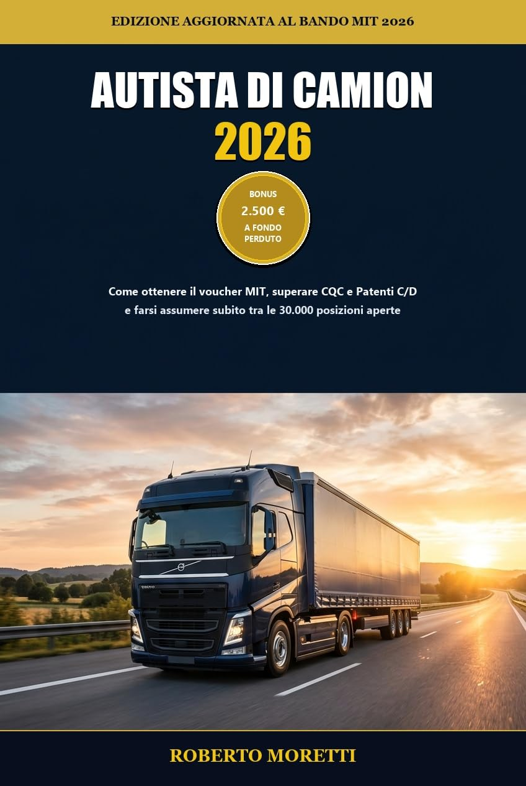

Prendere patente C, CE o D e CQC costa normalmente tra 2.800 € e 4.000 €. Con questa guida operativa di Roberto Moretti scopri come ottenere il voucher a fondo perduto pari all'80% delle spese ed entrare subito con contratti a tempo indeterminato e stipendi tra 1.800 € e 2.800 € netti al mese.

Mentre molti cercano lavoro invano, le aziende di logistica e autolinee competono per assumere nuovi conducenti. Ma serve muoversi con lucidità per non bruciare i fondi.
Zero teoria inutile, solo passaggi pratici, modulistica, normative aggiornate e contatti diretti.
Tutti i requisiti anagrafici (18-35 anni, patente B valida, cittadini italiani ed europei) e la lista esatta delle patenti coperte: C, C1, CE, D, DE e CQC.
La procedura dettagliata con SPID o CIE sul portale ministeriale. Preparazione dei dati in anticipo per non rischiare di trovare il budget esaurito.
Come attivare il buono entro i primi 60 giorni presso una scuola guida accreditata e come scandire i 18 mesi successivi per superare tutti gli esami.
Confronto economico e operativo tra trasporto merci (C/CE per autoarticolati e bilici) e trasporto persone (D/DE per autobus e gran turismo).
Metodo di studio per il corso accelerato da 140 ore: analisi dei quiz comuni e specialistici, trucchi mnemonici ed errori da evitare alla Motorizzazione.
Tabella retributiva reale: minimi contrattuali, maggiorazioni per trasferta e notturno non tassate. Differenza tra corto raggio e tratte internazionali.
Come candidarsi sui portali di settore ANITA e ANAV & Jobs per ricevere offerte dirette dalle aziende evitando commissioni e intermediari.
Regolamento CE 561/2006: ore di guida massime, pause obbligatorie, riposi giornalieri e settimanali per lavorare in totale sicurezza e nel rispetto della legge.
Tutto quello che c'è da sapere prima di ordinare la guida e avviare la procedura.
Il voucher è destinato a cittadini italiani ed europei di età compresa tra i 18 e i 35 anni (fino al giorno precedente il compimento del 36° anno) già in possesso di regolare patente B.
Il buono copre fino all'80% delle spese sostenute per il conseguimento della patente e della CQC, fino a un importo massimo di 2.500 euro a persona a fondo perduto. Non va restituito.
Assolutamente sì! Il libro è in formato Kindle, ma Amazon fornisce l'app gratuita Amazon Kindle per qualsiasi smartphone (Android, iPhone), tablet (iPad, Galaxy Tab) o computer (PC Windows, Mac), oltre alla lettura immediata via browser con Kindle Cloud Reader.
Se sei abbonato al programma Kindle Unlimited di Amazon, puoi scaricare e leggere l'intero libro gratis (0,00 €) con un solo clic direttamente dalla pagina prodotto.
Il bando include tutte le patenti superiori: per trasporto merci (C, C1, CE, C1E e CQC Merci) e per trasporto persone (D, D1, DE, D1E e CQC Persone).
Seguendo la roadmap intensiva descritta nel libro, la maggior parte dei candidati ottiene patente e CQC entro 4-6 mesi. Grazie alla fortissima carenza di autisti, oltre il 90% trova impiego prima ancora di terminare il corso o nei giorni immediatamente successivi.